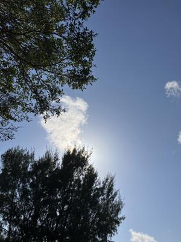
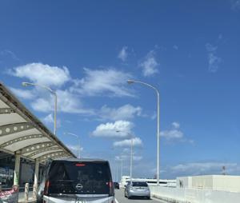
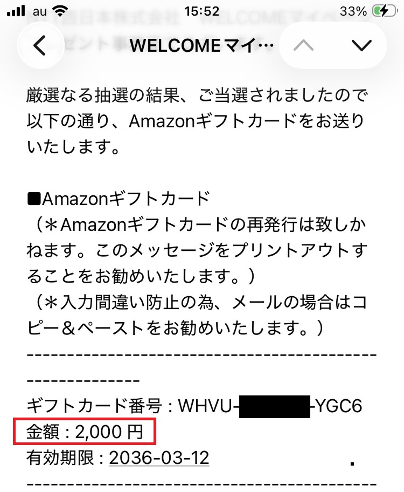

うるがいの話 ある日
最新: 春の嵐【うるがいの話 ある日】とは 一日だけのプログです
『うるがいの話』の最新一日だけのプログで、通信料が少なく経済的だ。カニの画像をクリックすると全ての日付が載る『うるがいの話』サイトを表示します
|
|
【うるがいの話】 うるがい(ｳﾙｶﾞｲ urugai)とは、『もずくがに』の名前でとても大きくなります。 |
|---|---|
|
|
【カミマヤーの話】 猫のことを方言でマヤーといいます。カミマヤー（kamimayaa）とは、神の猫のことです。 |
|
【たながぁの音楽】 たながぁ（ﾀﾅｶﾞｰ tanagaa）とは手長えびのことで、何種類かあり大きいのは車 エビぐらいになります。 |

|
【ぶながぁの話】 ぶながぁ(ﾌﾞﾅｶﾞｰ bunagaa)とは、赤い髪の毛、赤い身体、そして身長は１ｍ２０ｃｍ ぐらい、川の蟹を食べているの目撃された。場所は沖縄県国頭郡大宜味村のと ある村僕の隣近所に住んでいる爺さんから、聞いた話です。 |
|
|
【ギーマの話】 ギーマ(giima)とは、山原の里山に咲くスズランに似た、 花を付けます。実は食べられます、 気が付くと口の周りが紫になっています。 |
2026年03月13日 (金）春の嵐
16:31

ウオーキングの時は、まだそんなに風は強くなっかです。夜から
凄い天気になりました。
ニングヮチカジマーイ（にんぐゎちかじまーい）
「二月風回り」。３月から４月にかけてよく発生する南岸低気圧
（別名「台湾坊主」）のこと。
この時期は突風や風向きの急変があり、航海には危険が多いので
、旧暦二月の風回りとして注意が必要とされています。
この時期ニングヮチカジマーイで海が荒れ、定置網が度々壊され
たました。一次産業は大変です。
コドモは、ゴマに会いに旅立ちました。閉所恐怖症になったと言
っていました。

先ほど、『WELCOMEマイページプレゼント 当選のお知らせ』が
届きました。
この度は、「マイページ登録でもらえる！ＷＥＬＣＯＭＥマイペ
ージプレゼント」にご応募いただき、誠にありがとうございます。
ＮＴＴ西日本株式会社 ＷＥＬＣＯＭＥマイページプレゼント事
務局でございます。
